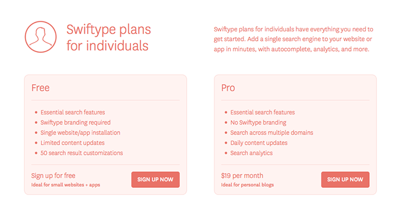
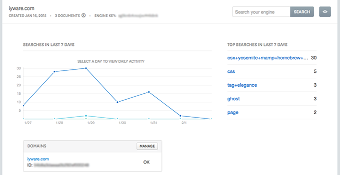
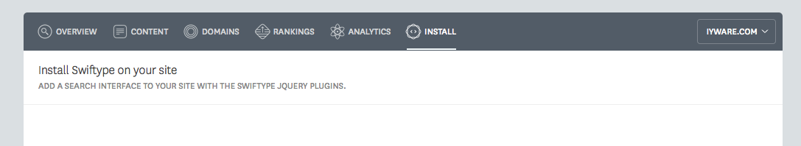
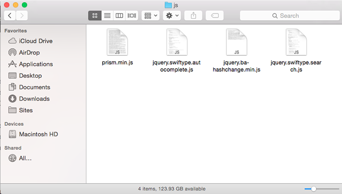
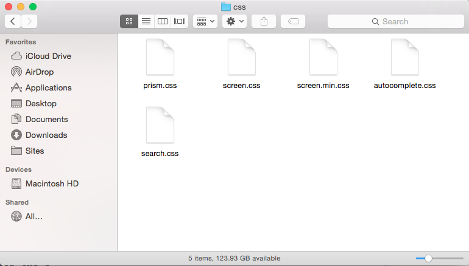
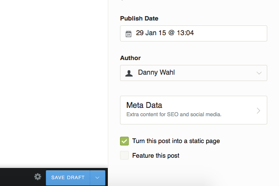
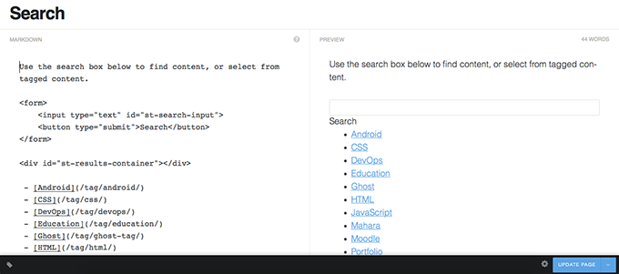
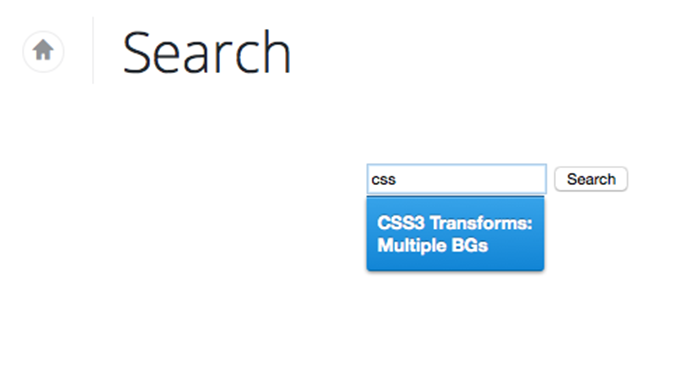

Add Search to Your Ghost Blog with Swiftype
 Danny Wahl
•
•
Danny Wahl
•
•
If you're moving from WordPress to Ghost (or really any other blog platform) one of the things you've probably noticed is sorely missing is search. The Ghost devs know it too. Adding search is on the roadmap, unfortunately it's backlogged and they're currently looking for a Search Lead developer. So I wouldn't count on native search coming for a while- like maybe 0.7.
In the meantime, it's not that hard to integrate a third-party service into your Ghost site, and in this post I'll show you how to do it using Swiftype. What is Swiftype?
Swiftype is a hosted software service that eliminates the need to create your own search software from scratch, making it possible for any website owner or mobile app developer to add great search to their product.
Sounds exactly like what we need!
Sign up for Swiftype
Head on over to the Swiftype pricing page page and scout out the plan that you want. Personally I'm just using the free plan.

Another option available is to activate Smart Errors as an app in your Cloudflare dashboard if you're using Cloudflare. This will also give you the added benefit of having a better 404 page than this: ;> <
After you've enabled smart errors head to your swiftype dashboard and create what they call a "Search Engine" which is actually a search context (generally a domain- but you can have it search multiple domains).

Option 1: Add Swiftype Search with Cloudflare
After you've created your account you can very simply integrate Swiftype search into your site by heading back to Cloudflare and enabling the Swiftype Search app. This will provide the most basic integration- a simple 'search' button gets injected into your pages. It's crude, but it works.
Option 2: Add Swiftype to Your Ghost Theme
If you're looking for a richer integration then you will need to install the Swiftype code to your Ghost theme template. There are a variety of ways to do this- you could add a search icon to your footer, or to your default.hbs template file if you want every page to be searchable. However, I'll be showing you how to make a static search page with an embedded search form.
Go back to the Swiftype page and inside your search engine choose "Install" from the toolbar.

Download Swiftype Autocomplete & Search
Before you install the integration code you'll need to download the packages. You could do it with git so you can upgrade in the future (make sure you initialize as a submodule if ghost is a git module too!). Or you can simply download them:
Notice that these are jQuery plugins. It shouldn't be an issue as {{ghost_foot}} will insert jQuery into your theme- and that should be a part of your theme!
Add Autocomplete & Search to your Theme Folder
Navigate to /ghost/content/themes/[your theme]/assets/js/ where /ghost/ is your ghost installation directory and [your theme] is your theme name (default is casper). If your theme doesn't have a js folder you can create one. Move the JavaScript files from the Swiftype downloads into this folder. Note that you don't need all the files, only the .js files:
- jquery.swiftype.autocomplete.js
- jquery.ba-hashchange.min.js
- jquery.swiftype.search.js

Now do the same thing for the CSS files but in the /assets/css/ folder:
- autocomplete.css
- search.css

Optionally you can concatenate the CSS to the end of the Ghost CSS file screen.css, which is probably a better idea because it will save you 2 HTTP requests and a little bit of bandwidth.
Add Autocomplete & Search to your Theme Template
Now that you have added the files to your Ghost /assets/ folder you can insert them into your theme template files. Navigate to /Ghost/content/themes/[your theme]/ and open up default.hbs. The reason that we need to edit the default template is because the function {{ghost_foot}} outputs the jQuery call. If you call Swiftype before jQuery is loaded (e.g. in page.hbs) you'll get an error.
In default.hbs find the line with {{ghost-foot}} and add the following:
<script src="{{asset "js/jquery.swiftype.autocomplete.js"}}"></script>
<script src="{{asset "js/jquery.ba-hashchange.min.js"}}"></script>
<script src="{{asset "js/jquery.swiftype.search.js"}}"></script>
<script type="text/javascript">
$("#st-search-input").swiftype({
engineKey: "XXXXXXXXXX"
});
$("#st-search-input").swiftypeSearch({
engineKey: "XXXXXXXXXX",
resultContainingElement: "#st-results-container"
});
</script>
Notice that we're using the {{asset }} API so you don't have to worry about the full path, Ghost will build it for you. You'll need to replace engineKey: "XXX" with your engine key, found on your Swiftkey dashboard.
If you want search to be available on every page (you'll still have to add a search form to default.hbs then leave the code as is. If you intend to only have search available on a specific search page then you can wrap the above code in {{is}} brackets:
{{#is 'page'}}
<script src="{{asset "js/jquery.swiftype.autocomplete.js"}}"></script>
<script src="{{asset "js/jquery.ba-hashchange.min.js"}}"></script>
<script src="{{asset "js/jquery.swiftype.search.js"}}"></script>
<script type="text/javascript">
$("#st-search-input").swiftype({
engineKey: "XXXXXX"
});
$("#st-search-input").swiftypeSearch({
engineKey: "XXXXXX",
resultContainingElement: "#st-results-container"
});
</script>
{{/is}}
This will tell Ghost to only include the javascript on 'page' types. Unfortunately at this point the API isn't robust enough to target a specific page, but this will save you a few HTTP requests on archives and posts.
Create a Search Page
If you are intending to create a static search page and not to integrate search into your theme template then head to your Ghost dashboard and create a new post. I titled mine "Search":

Click on the 'settings' wheel and change the post into a static page. You can also adjust the slug if you'd like.

If you want to provide information to your users you can add content to the page, for example I added all the tags I use on my blog. There's no easy way to do this I just don't have many tags, if you want something more dynamic, I suggest you add it to your template.

Finally it's time to add the search form to your page. Even though Ghost uses Markdown, remember that any HTML is valid Markdown, so you can directly create a form:
<form>
<input type="text" id="st-search-input">
<button type="submit">Search</button>
</form>
<div id="st-results-container"></div>
Publish your page and you should be ready to go (assuming Swiftype has finished indexing your content). Just make sure that the form ID and the results ID match your jQuery selectors- they should if you just copied from here.

That's it for the integration. You can always go back and edit the CSS to better match your site. You can also add the renderFunction to your JavaScript to control how Swiftype outputs its results.
There you have it, you now have an indexed and searchable blog.